Using French
Usage page, as of 18 November 2026. How to choose a topic in the vocabulary trainer, answer, read the feedback and manage the card file. The pictures are screenshots of the app.
The window
French is a subject of the School app: open it from the Apps menu with
 School or with
School or with
Alt+A and choose the tab French at the top. There are no dialog windows; everything is in this tab.
On the left is the vertical bar, next to it the card Vocabulary with topic, direction and the state of the card file. On the right is the question with the answer field, below it the feedback on the last answer, at the very bottom the status line with the number of correct answers in this session.
The bar
The buttons only carry symbols; what they do is in the tooltip.
| Symbol | Tooltip | What happens |
|---|---|---|
| Vocabulary | Opens and closes the card Vocabulary. | |
| Checker | Check your own text (below). | |
 | Analysis | Identify stylistic devices in a practice text. |
| Stylistic devices quiz | Match stylistic devices, tell narrator from character (below). | |
| Workshop | Practise grammar in four levels. | |
| Error trainer | Repeat your own mistakes. | |
 | Error hunt | Find built-in errors against the clock. |
| Résumé | Structure and summarise. | |
| Letter | Write a letter for a task. | |
| Exam | Write an exam of 180 minutes. | |
 | Progress | How often a rule reports, week by week. |
 | Help for French | Brings the Doku app to the front and shows this page. |
Every tool has a card in the bar (choice and settings) and its own work area on the right; a click on the symbol switches both. Confirmations, for instance before clearing, are in the card: the first press asks, a second one does it.
Asking and answering
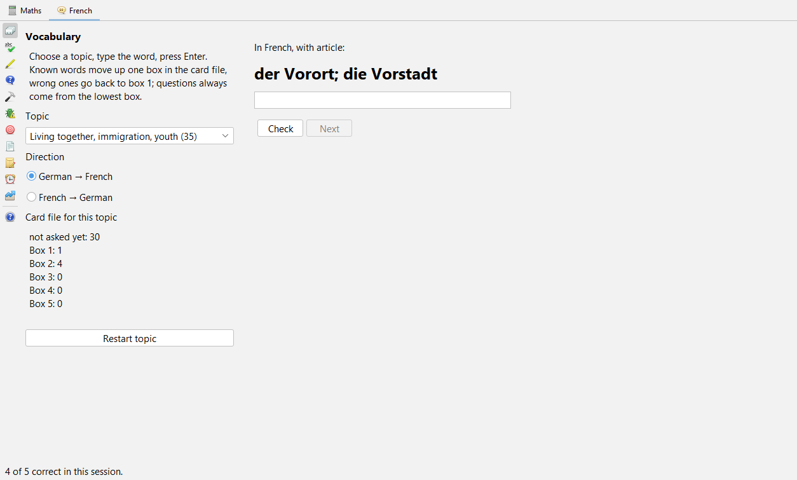
In the card you choose the topic (the number in brackets is its number of words) and the direction:
German → French or French → German. Above the question it says what is wanted; for a noun in the French direction it
says “with article”. Type the answer and press Enter (or Check); a second Enter (or
Next) brings the next question. An empty answer is not marked.
Upper and lower case, double spaces and a full stop at the end do not count, nor does which apostrophe the keyboard produces. A noun may also come with un, une or des if the gender is right. In German one of the meanings is enough; neither the article nor an addition in brackets is required.
The feedback
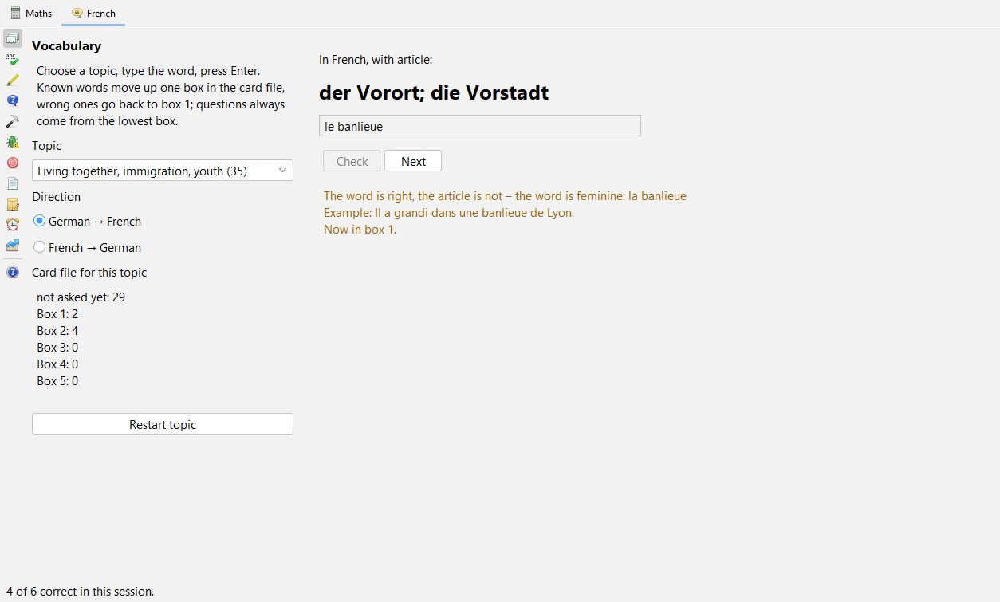
The feedback always gives the correct form, the example sentence and the box the word is now in. Its colour says how the answer was:
- green – correct. The word moves up one box.
- ochre – almost correct: only accents are missing, the article is missing or has the wrong gender. The word stays in its box until the form is right as well.
- red – wrong. The word goes back to box 1.
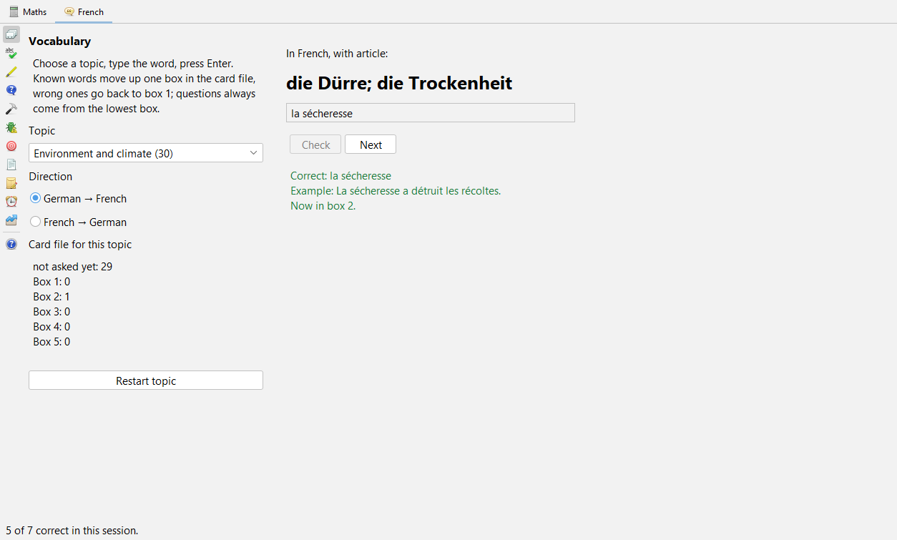
False friends
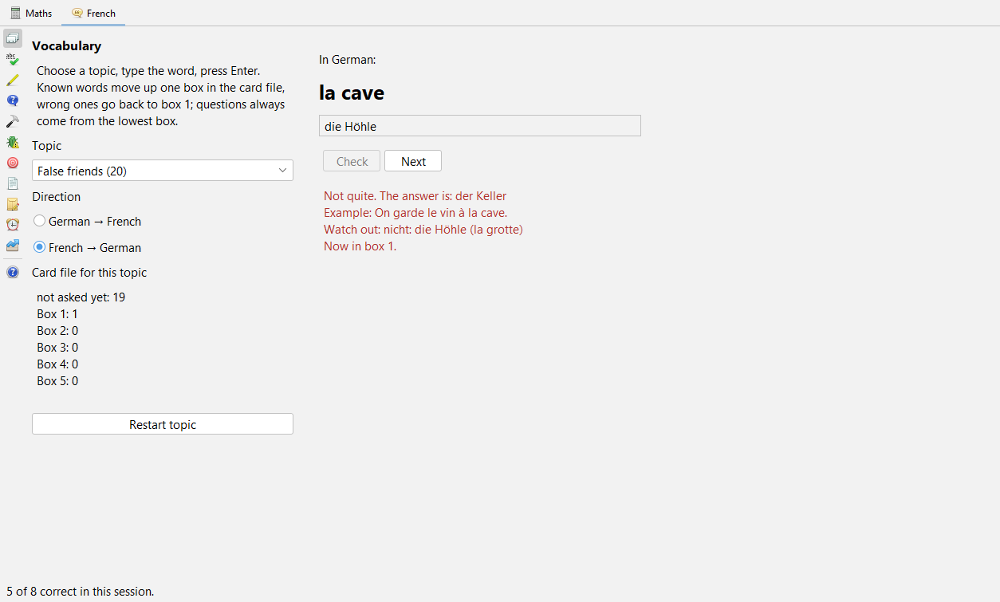
In the topic False friends every word carries a hint about what it does not mean. It is shown in the feedback after every answer, a correct one as well. The hints are in German, like the meanings.
The card file
Under “Card file for this topic” you see how many words have not been asked yet and how many are in each of the five boxes. Questions always come from the lowest box that still has words – a new word counts as box 1 – and never the same word twice in a row. To learn a topic from scratch, press Restart topic: the first press asks in the card, a second one within ten seconds empties the card file of this topic. The other topics stay as they are.
Topic, direction and card file are kept in the workspace; the next start continues there. Whatever no longer fits is reported in the status line instead of being dropped silently.
The checker
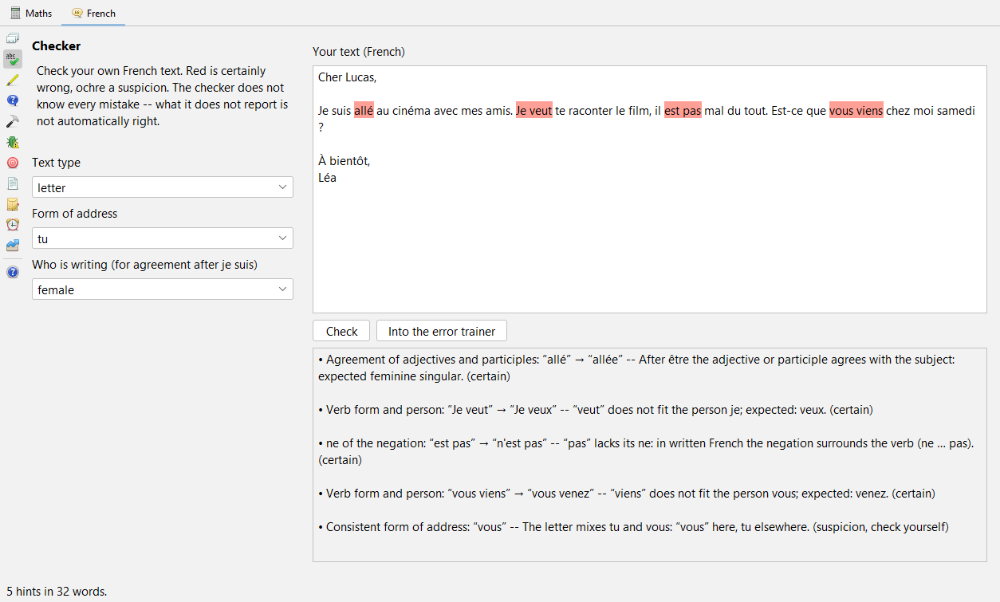
In the card you set what kind of text it is (letter, analysis, résumé or free), which form of address is required and who is writing – agreement after je suis needs that. On the right you write or paste the text and press Check. Every reported passage is marked: red is certainly wrong, ochre a suspicion you should check yourself. Changing the text afterwards removes the marks; they belong to the checked state. Into the error trainer turns every reported passage into a card, without duplicates. The checker does not know every mistake – what it does not report is not automatically right.
The analysis
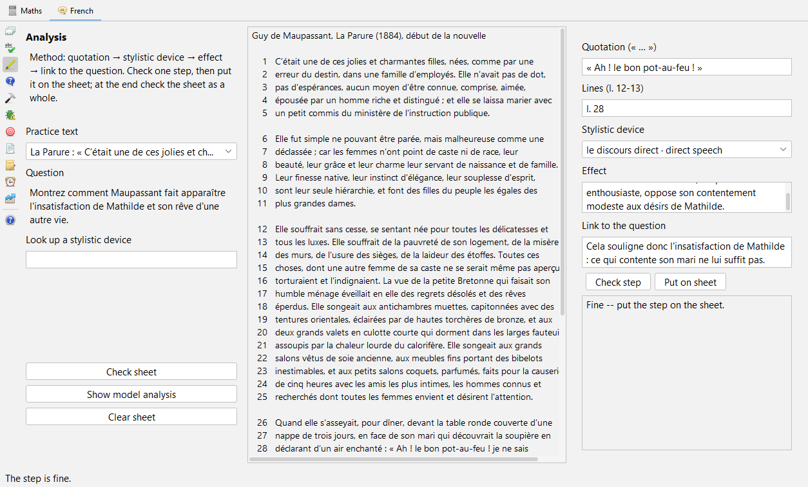
In the card you choose a practice text; its question is shown below, and the glossary of stylistic devices can be searched there in French, German or English. On the right is the text with line numbers. A step consists of the quotation in « », the lines, the stylistic device, its effect and the link to the question. Check step says whether the quotation is in the text, the lines are right, the device fits and effect and link have substance. Only a step without errors goes on the sheet. Check sheet judges the whole: spread over the text, variety of devices, how many passages of the model analysis are covered, and shows the sheet as connected paragraphs as they should stand in the exam. The model analysis only shows on request.
The stylistic devices quiz
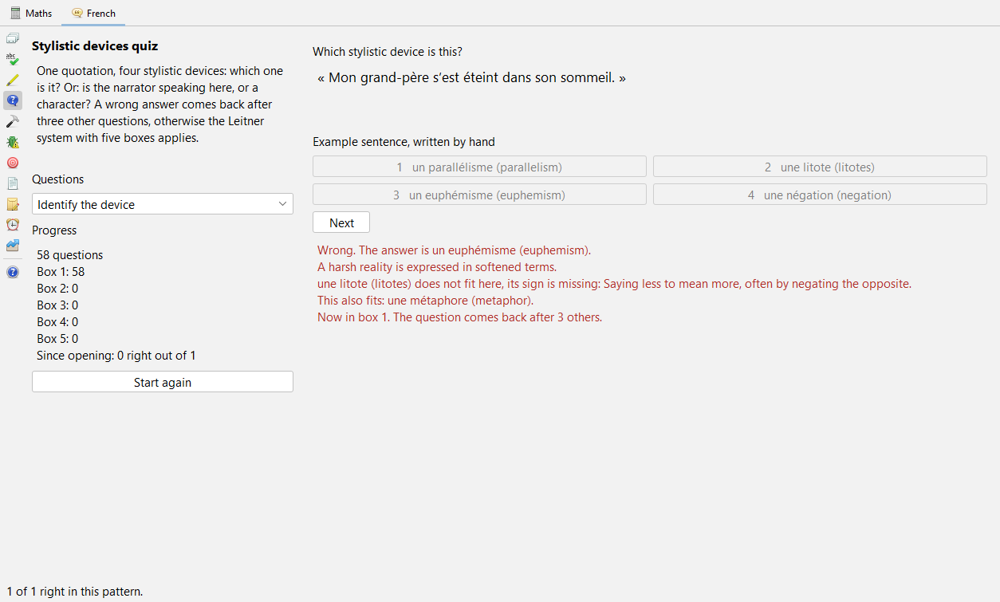
The quiz asks two kinds of questions; in the card you choose one of them or both mixed.
- Identify the device: a quotation and four stylistic devices, one of them right. The quotations are self-written example sentences, public-domain verse and sentences from classical literature, and passages from the practice texts of the analysis; the source is shown below the quotation. Among the wrong answers there is often a close confusion (metaphor and simile, litotes and euphemism). Anything that might also apply to the quotation is not offered as a wrong answer.
- Narrator or character: a passage from a practice text or from a short self-written text; the lines before and after it are shown with numbers. The question is who speaks. The feedback names the sign: a dash or « » for the character, otherwise the narrator – also in free indirect speech, which renders the character's thoughts without quotation marks.
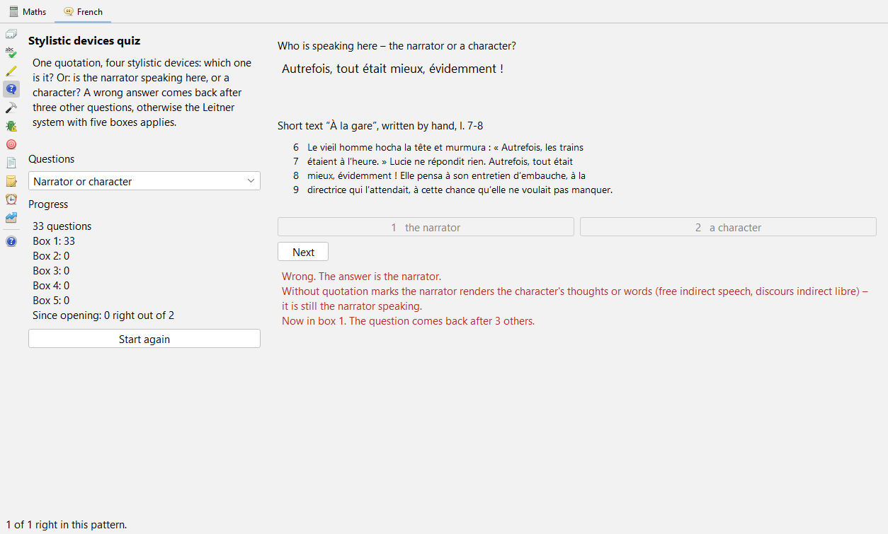
You answer with a click or Alt+1 to Alt+4; after that the answer stands, a second click
changes nothing. The label of the right button turns green, that of a wrongly chosen one red. Choosing the general term (répétition
instead of anaphore) is not wrong but imprecise – its label turns ochre and the feedback names the more
precise device. If you choose a device whose outward sign is missing from the quotation (a simile without a comparison
word), the feedback says which sign that would be. Next fetches the next question.
Like the vocabulary, the questions move through five boxes: right one box up, imprecise stays, wrong back to box 1. A wrongly answered question also comes back after three others. The card shows the number of questions, the state of the boxes and the right answers since opening; Start again asks in the card. Every answer counts in the progress.
The workshop
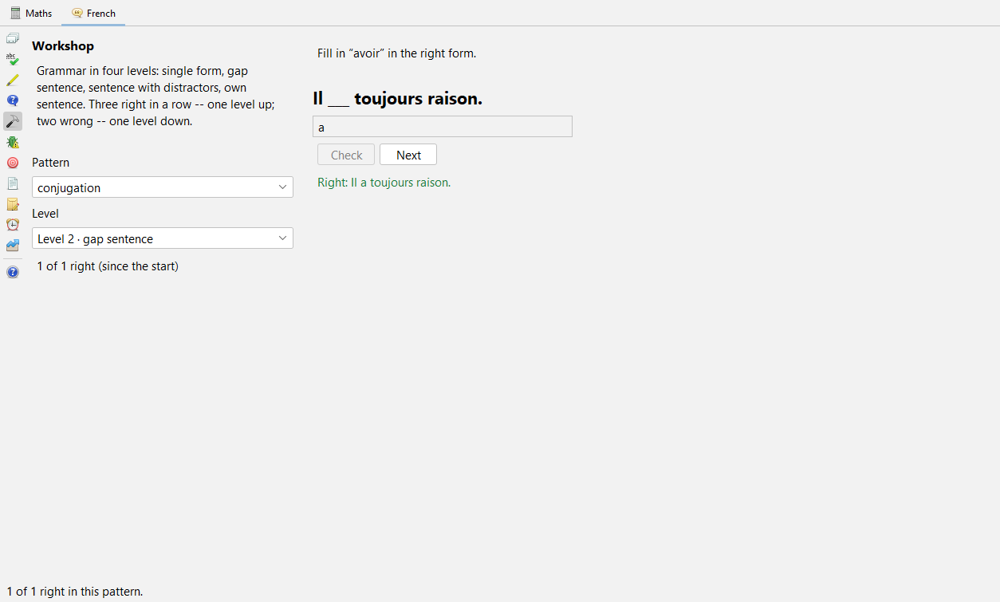
The workshop practises a grammatical pattern in four levels: single form, gap sentence, sentence with distractors (the choice is shown as buttons) and own sentence with required words, marked by the checker. Three right in a row lead one level up, two wrong one level down. The card shows how many tasks of this pattern were right so far.
The error trainer
Here your own mistakes come back: from the checker and from the error hunt. Each card shows the sentence and the passage; the input field already holds the sentence, you correct it there. The feedback says whether the passage is now right and explains the rule. Like the vocabulary, the cards move through five boxes; questions come from the lowest.
The error hunt
Choose the number of sentences and built-in errors and start a new round. The text appears with a clock; a click on a word marks it, a second click removes the mark. Evaluate – or the end of the time – shows found, missed and wrongly marked passages and the points. Missed errors become cards in the error trainer.
The résumé
First divide the text into sections, with lines and a short heading, separated by |
(1-11 la vie rêvée | 12-27 le désir). Insert outline writes introduction and transitions from that –
but only into an empty résumé, nothing written is ever overwritten. Check résumé reports length, introduction
with work and author, quotations, copied passages, present tense, first person, connectives and the structure, plus the checker's hints. Model
structure and model résumé only show on request.
The letter
In the card you choose a task; recipient, required form of address and minimum length are shown above the letter. The phrases are expressions for opening and closing; a click inserts them at the cursor. After Check letter the checklist shows what is done (✓) and what is not (✗): salutation with comma, Cher or Chère fitting, tu or vous as required, all points of the task, closing formula, length.
The exam
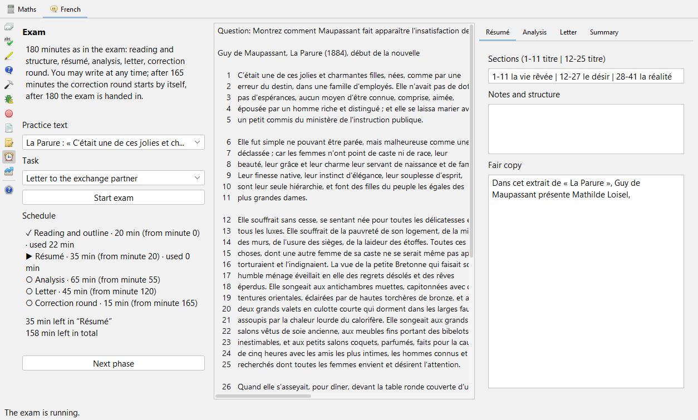
Choose text and letter task and press Start exam. The schedule has five phases: reading and structure, résumé, analysis, letter, correction round – 180 minutes in all. The card shows the current phase (▶), the finished ones (✓) and the clock; if you overrun a phase you see it there, nothing is switched. You may write in any part at any time, with notes and fair copy. After 165 minutes the correction round starts by itself, handing in is possible after ten minutes of correction at the earliest, after 180 minutes the exam is handed in. The summary gives words, hints and time used per part. A running exam stays in the saved state; if the time runs out while the subject is closed, it is handed in on the next opening. Starting again needs a confirmation.
The progress
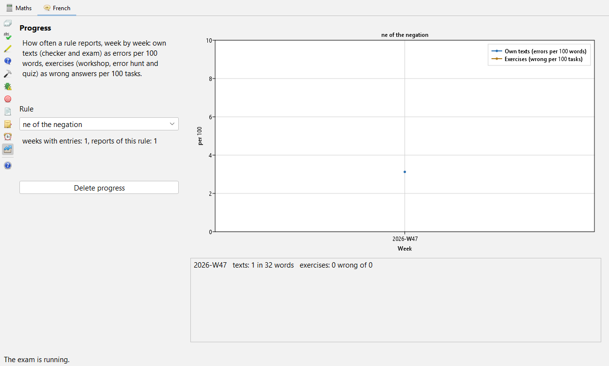
In the card you choose a rule. The chart shows two lines per calendar week: own texts (checker and exam) as errors per 100 words and exercises (workshop, error hunt and quiz) as wrong answers per 100 tasks. The numbers are below. Besides the rules of the checker, the two kinds of quiz question can be chosen there. Delete progress asks in the card.
What the saved state keeps of the tools
The saved state keeps which tool was open, the checker's text, text and sheet of the analysis, the levels of the workshop, the boxes and the choice of the quiz, the cards of the error trainer, résumé and structure, the letter, a running exam and the progress entries. Broken entries are reported in the status line and replaced by the default.